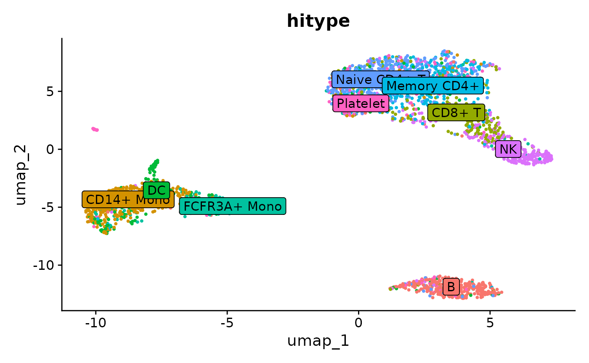

Calculate cell type scores and assign cell types
calculate-cell-type-scores-and-assign-cell-types.RmdUsing RunHitype on Seurat object
Prepare the seurat object:
See also https://satijalab.org/seurat/articles/pbmc3k_tutorial.html#setup-the-seurat-object
suppressWarnings(SeuratData::InstallData("pbmc3k"))
pbmc <- pbmc3k.SeuratData::pbmc3k
pbmc <- Seurat::UpdateSeuratObject(pbmc)
pbmc[["percent.mt"]] <- Seurat::PercentageFeatureSet(pbmc, pattern = "^MT-")
pbmc <- subset(pbmc, subset = nFeature_RNA > 200 & nFeature_RNA < 2500 & percent.mt < 5)
pbmc <- Seurat::NormalizeData(pbmc)
pbmc <- Seurat::FindVariableFeatures(pbmc, selection.method = "vst", nfeatures = 2000)
pbmc <- Seurat::ScaleData(pbmc, features = rownames(pbmc))
pbmc <- Seurat::RunPCA(pbmc, features = Seurat::VariableFeatures(object = pbmc))
pbmc <- Seurat::FindNeighbors(pbmc, dims = 1:10)
pbmc <- Seurat::FindClusters(pbmc, resolution = 0.5)
#> Modularity Optimizer version 1.3.0 by Ludo Waltman and Nees Jan van Eck
#>
#> Number of nodes: 2638
#> Number of edges: 95927
#>
#> Running Louvain algorithm...
#> Maximum modularity in 10 random starts: 0.8728
#> Number of communities: 9
#> Elapsed time: 0 seconds
pbmc <- Seurat::RunUMAP(pbmc, dims = 1:10)
library(hitype)
markers <- data.frame(
cellName = c(
"Naive CD4+ T", "CD14+ Mono", "Memory CD4+", "B",
"CD8+ T", "FCFR3A+ Mono", "NK", "DC", "Platelet"
),
geneSymbolmore1 = c(
"IL7R,CCR7", "CD14,LYZ", "IL7R,S100A4", "MS4A1",
"CD8A", "FCGR3A,MS4A7", "GNLY,NKG7", "FCER1A,CST3", "PPBP"
),
geneSymbolmore2 = rep("", 9)
)
# Load gene sets
gs <- gs_prepare(markers)
# Assign cell types
obj <- RunHitype(pbmc, gs)
Seurat::DimPlot(obj, group.by = "hitype", label = TRUE, label.box = TRUE) +
Seurat::NoLegend()
Compared to the manual marked cell types:

See also https://satijalab.org/seurat/articles/pbmc3k_tutorial.html#assigning-cell-type-identity-to-clusters
Using hitype_score and hitype_assign on
Seurat directly
By default, hitype_score() expects log-normalized data
(scaled = FALSE) and performs its own z-scoring. In Seurat
v5, access the normalized data with
Seurat::GetAssayData(pbmc, layer = "data"):
scores <- hitype_score(Seurat::GetAssayData(pbmc, layer = "data"), gs)
cell_types <- hitype_assign(pbmc$seurat_clusters, scores, gs)
summary(cell_types)
#> # A tibble: 9 × 5
#> Level Cluster CellType Score Margin
#> <int> <fct> <chr> <dbl> <dbl>
#> 1 1 0 Naive CD4+ T 0.721 0.685
#> 2 1 1 CD14+ Mono 2.28 1.20
#> 3 1 2 Memory CD4+ 0.599 0.0927
#> 4 1 3 B 2.09 2.17
#> 5 1 4 NK 1.43 0.179
#> 6 1 5 FCFR3A+ Mono 3.42 2.44
#> 7 1 6 NK 3.91 2.88
#> 8 1 7 DC 5.55 4.59
#> 9 1 8 Platelet 11.5 11.3If you prefer to pass pre-scaled data (e.g. from a Seurat
scale.data layer), use scaled = TRUE:
scores <- hitype_score(Seurat::GetAssayData(pbmc, layer = "scale.data"),
gs, scaled = TRUE)When scoring with learned weights (see
vignette("train-marker-weights")), use
norm = "weight", use_sensitivity = FALSE so that scores are
normalized by the total marker weight and shared markers are not
double-penalized:
scores <- hitype_score(Seurat::GetAssayData(pbmc, layer = "data"), gs,
norm = "weight", use_sensitivity = FALSE)compare to the manual marked cell types:
| Cluster ID | Markers | Cell Type |
|---|---|---|
| 0 | IL7R, CCR7 | Naive CD4+ T |
| 1 | CD14, LYZ | CD14+ Mono |
| 2 | IL7R, S100A4 | Memory CD4+ |
| 3 | MS4A1 | B |
| 4 | CD8A | CD8+ T |
| 5 | FCGR3A, MS4A7 | FCGR3A+ Mono |
| 6 | GNLY, NKG7 | NK |
| 7 | FCER1A, CST3 | DC |
| 8 | PPBP | Platelet |
See: https://satijalab.org/seurat/articles/pbmc3k_tutorial.html#assigning-cell-type-identity-to-clusters
Exploring the result of hitype_assign
The result of hitype_assign is a data.frame
with the following columns:
-
Level: the level of the cell type in the hierarchy -
Cluster: the cluster ID -
CellType: the cell type name -
Score: the score of the cell type
head(cell_types)
#> # A tibble: 1 × 5
#> Level Cluster CellType Score Margin
#> <int> <fct> <chr> <dbl> <dbl>
#> 1 1 0 Naive CD4+ T 0.721 0.685